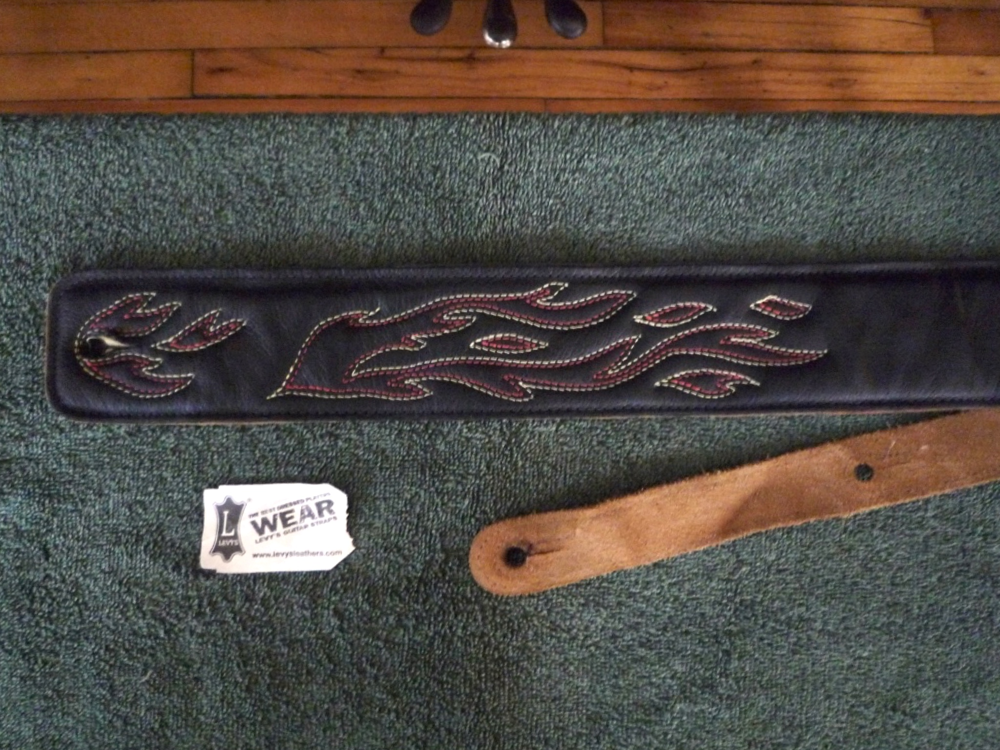
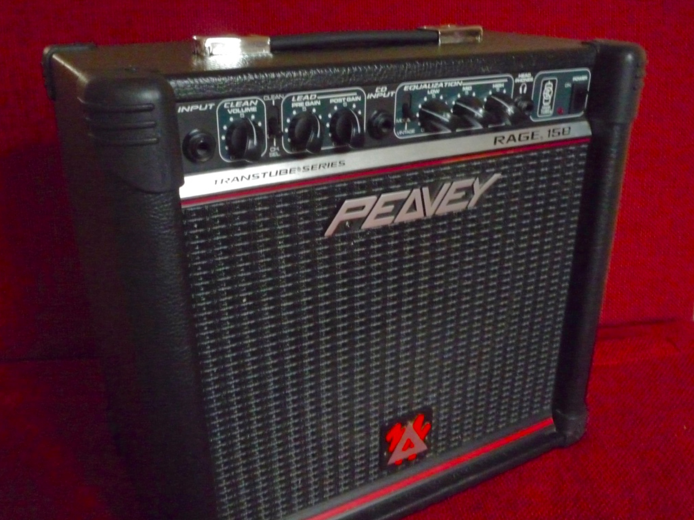

Lefty Epiphone SG


Our prices are in Canadian Dollars and they include all applicable taxes. Write us if you have any questions or to arrange a time to drop by.
Yorkville AM50 Amplifier 50 watt variant of Yorkville’s Acoustic Master series of amplifiers. The perfect compact combo amplifier for solo performers who play acoustic guitar and sing. Its feature set also makes it a practical amplifier for keyboards, drum machines or other instruments that supply a line level output. Can sit upright, like a typical amplifier, projecting sound forward, or back at an angle to project sound upwards away from the floor. Sold for $105 after $6 discount.

Fender Frontman 15R Guitar Amplifier A pretty and perfectly worn 15 watt amplifier with reverb. Two channels: a normal and overdrive that can be toggled with a button on the front amplifier. Three band EQ (bass, middle, treble) and spring reverb. Mono ¼ inch input for your electric guitar, stereo RCA inputs to play songs from your iPod, and a stereo ¼ inch output for headphones. 8 inch speaker in a closed back cabinet. Sold for $75 with a friendly $2 discount.

Black Levy’s Leather Guitar Strap with Embroidery Black leather with red and yellow flame stitching on the front. Backside is brown suede. Length adjustable from 37 inches to 50 inches. Shoulder pad width is 2½ inches. Back strap width is 1⅛ inches. Smells nice, like leather should. Excellent condition — no flaws. Sold for $9
Lefty SX Precision Bass Solid body in gloss black. Rosewood fingerboard on tinted maple bolt-on neck (with skunk stripe). Two-ply dark red tortoise shell pickguard. Chrome hardware and knobs. Half-round strings with winderfull pink thread. And a hard case, toolkit and polishing cloth. Sold for $211

Aria AB-30 Bass Amp A snappy, almost vintage, 30-watt bass amplifier in good working order. 8-inch Aria speaker in a closed-back sealed cabinet. Blue tipped controls for Pre-Amp Volume, Master Volume and three-band EQ (Treble, Middle & Bass). Excellent knob feel! Two ¼-inch inputs on the front for your electric bass guitar. Two outputs on the back: a ¼-inch stereo headphone output and a ¼-inch mono line out. Sold for $55

Peavey Rage 158 Solid and good sounding 15 watt guitar amplifier. Two channels: clean and distortion. Three band EQ (bass, middle, treble) with modern and vintage modes. One mono input for your electric guitar, one stereo input to play songs from your iPod, and a stereo output for headphones. Sold for $44
Roland Cube 15 A very reliable and versatile 15 watt guitar amplifier. Good clean channel and four distinct distortion circuits: Overdrive, Distortion, Metal and Metal Stack. Auxillary input, speaker output and headphone output. Sold for $60 $6 dollar discount for quick pick-up.

Audio-Technica AT2020 USB Large diaphram condensor microphone with integrated analog to digital converter and USB connection. Included USB cable, small table-top stand and standard mic stand mount. Sold for $80 $8 dollar discount for friendly customer.

Mystery Microphone Handheld dynamic microphone of unknown origin with reliable XLR connection and unreliable wireless connection. Included XLR to 1/4" cable, wireless transmitter, wireless receiver and instructions.Sold for $8

Small Acoustic Guitar Case Not a hard case and not a soft case — something inbetween. Fits a classical guitar or small acoustic. Clean, functional and light-weight.Sold for $9

Painted Turtle Instruments on Reverb Stalk guitars like your friends on Facebook. reverb.com/shop/painted-turtle-instruments ▸ All our instruments on Reverb ▸ Lefty electric guitars ▸ Lefty bass guitars

Spaceman Music Ottawa’s very best used guitar store. 388 Gladstone Avenue 613-594-5323 spacemanmusic.com
Sounds Good Music The neighbourhood music store. 151 Rochester Street 613-792-4035 Browse their listings on Kijiji
Brian’s Stringed Instrument Workshop The neighbourhood guitar repair expert. 151 Rochester Street 613-322-2454 guitarfixer.ca
Ottawa Urban Turtle Sanctuary Information about the turtle species that make their home in the Ottawa area. ottawaurbanturtlesanctuary.ca